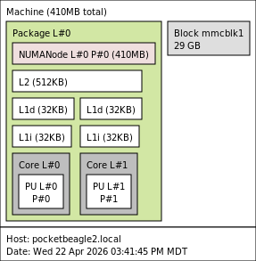

Ryder Hutchings
Ryder HutchingsRevisiting the BeagleBoard PocketBeagle 2
Summary
- PocketBeagle 2 (TI AM6254), 2 Cortex-A53 cores available @ ~1 GHz
- 512 MB RAM (≈410 MB usable), heavy swap usage (3.2 GB)
- microSD storage with swap enabled
- Debian 13 (Trixie)
- No GPU or hardware acceleration
Basic Information
- Mfr. URL (official): beagleboard.org
- Board purchased from: N/A (provided by BeagleBoard)
- Board purchase date: N/A
- Board specs (as tested): N/A
- Board price (as tested): $28.13
Linux/System Information
# output of `screenfetch`
_,met$$$$$gg. ryderhutchings@pocketbeagle2.local
,g$$$$$$$$$$$$$$$P. OS: Debian 13 trixie
,g$$P"" """Y$$.". Kernel: aarch64 Linux 6.18.10-arm64-k3-r23
,$$P' `$$$. Uptime: 2h 16m
',$$P ,ggs. `$$b: Packages: 891
`d$$' ,$P"' . $$$ Shell: bash 5.2.37
$$P d$' , $$P Disk: 25G / 29G (92%)
$$: $$. - ,d$$' CPU: ARM Cortex-A53 @ 2x 1GHz
$$\; Y$b._ _,d$P' RAM: 154MiB / 410MiB
Y$$. `.`"Y$$$$P"'
`$$b "-.__
`Y$$
`Y$$.
`$$b.
`Y$$b.
`"Y$b._
`""""
# output of `uname -a`
Linux pocketbeagle2.local 6.18.10-arm64-k3-r23 #1 SMP PREEMPT_RT Wed Feb 11 22:31:43 UTC 2026 aarch64 GNU/Linux
System Topology

Note: lstopo results may be missing some information on new and strange SoCs.
CPU
Geekbench 6 results:
See: https://browser.geekbench.com/v6/cpu/17780795
- 23 Single-Core Score / 13 Multi-Core Score
Warning
Geekbench 6 took over 32 hours to complete. The system is heavily memory-constrained, resulting in extensive swap usage that severely impacts performance.
Geekbench 6 took over 32 hours to complete. The system is heavily memory-constrained, resulting in extensive swap usage that severely impacts performance.
top500-benchmark results:
See: geerlingguy/top500-benchmark
Click to expand HPLinpack / top500-benchmark results
TODO
- TODO Gflops at TODO W, for ~TODO Gflops/W
sysbench results:
See: akopytov/sysbench
Note
CPU performance is low, but consistent for a small embedded ARM system.
CPU performance is low, but consistent for a small embedded ARM system.
CPU speed:
events per second: 359.02
General statistics:
total time: 10.0028s
total number of events: 3594
Latency (ms):
min: 4.94
avg: 5.56
max: 13.04
95th percentile: 8.90
sum: 19996.82
Threads fairness:
events (avg/stddev): 1797.0000/2.00
execution time (avg/stddev): 9.9984/0.00
CoreMark results:
TODO
Embench results:
TODO
Thermals
N/A
Power
N/A
Disk
External microSD (USD00-128GB)
| Benchmark | Result |
|---|---|
| iozone 4K random read | 11.26 MB/s |
| iozone 4K random write | 4.62 MB/s |
| iozone 1M random read | 84.58 MB/s |
| iozone 1M random write | 58.45 MB/s |
| iozone 1M sequential read | 85.47 MB/s |
| iozone 1M sequential write | 54.93 MB/s |
Network
Important
No built-in WiFi. Networking is over USB (USB Ethernet).
No built-in WiFi. Networking is over USB (USB Ethernet).
iperf3 results:
iperf3 -c $SERVER_IP: 317 Mbpsiperf3 -c $SERVER_IP --reverse: 324 Mbpsiperf3 -c $SERVER_IP --bidir: 200 Mbps up, 166 Mbps down
nuttcp results:
nuttcp -t $SERVER_IP: 398.41 MB / 10.05 sec = 332.44 Mbps
GPU
Note
The TI AM6254 SoC does not include a GPU. No DRM device (`/dev/dri`) is present, and OpenGL/Vulkan workloads are not supported.
The TI AM6254 SoC does not include a GPU. No DRM device (`/dev/dri`) is present, and OpenGL/Vulkan workloads are not supported.
glmark2 results:
N/A
vkmark results:
N/A
GravityMark results:
N/A
LLM Inference
Warning
Larger models run slowly due to limited RAM and swap usage, so results may not reflect true model capability.
Larger models run slowly due to limited RAM and swap usage, so results may not reflect true model capability.
Basic ollama LLM model inference results:
Running benchmark 3 times using model: smollm:135m
TODO
Running benchmark 3 times using model: tinyllama:1.1b
| Run | Eval Rate (Tokens/Second) |
|---|---|
| 1 | 0.02 tokens/s |
| 2 | 0.02 tokens/s |
| 3 | FAILED (broken pipe) |
| Average Eval Rate* | N/A |
System used around TODO W during inference.
Memory
Note
Memory is fast enough on paper, but real performance drops under load due to swap and cache pressure.
Memory is fast enough on paper, but real performance drops under load due to swap and cache pressure.
tinymembench results:
Click to expand tinymembench benchmark results
tinymembench v0.4.10 (simple benchmark for memory throughput and latency)
==========================================================================
== Memory bandwidth tests ==
== ==
== Note 1: 1MB = 1000000 bytes ==
== Note 2: Results for 'copy' tests show how many bytes can be ==
== copied per second (adding together read and writen ==
== bytes would have provided twice higher numbers) ==
== Note 3: 2-pass copy means that we are using a small temporary buffer ==
== to first fetch data into it, and only then write it to the ==
== destination (source -> L1 cache, L1 cache -> destination) ==
== Note 4: If sample standard deviation exceeds 0.1%, it is shown in ==
== brackets ==
==========================================================================
C copy backwards : 1016.3 MB/s (0.8%)
C copy backwards (32 byte blocks) : 1001.3 MB/s (1.4%)
C copy backwards (64 byte blocks) : 968.7 MB/s (0.3%)
C copy : 999.0 MB/s (1.5%)
C copy prefetched (32 bytes step) : 848.5 MB/s
C copy prefetched (64 bytes step) : 921.8 MB/s
C 2-pass copy : 847.8 MB/s (0.1%)
C 2-pass copy prefetched (32 bytes step) : 592.4 MB/s
C 2-pass copy prefetched (64 bytes step) : 373.6 MB/s (0.6%)
C fill : 2130.4 MB/s (0.1%)
C fill (shuffle within 16 byte blocks) : 2130.0 MB/s
C fill (shuffle within 32 byte blocks) : 2129.1 MB/s
C fill (shuffle within 64 byte blocks) : 2129.8 MB/s (0.4%)
NEON 64x2 COPY : 1037.3 MB/s
NEON 64x2x4 COPY : 1033.1 MB/s
NEON 64x1x4_x2 COPY : 1070.2 MB/s (0.3%)
NEON 64x2 COPY prefetch x2 : 259.4 MB/s
NEON 64x2x4 COPY prefetch x1 : 1207.1 MB/s
NEON 64x2 COPY prefetch x1 : 1173.2 MB/s
NEON 64x2x4 COPY prefetch x1 : 1206.8 MB/s
---
standard memcpy : 965.9 MB/s (1.2%)
standard memset : 2129.2 MB/s
---
NEON LDP/STP copy : 1030.9 MB/s (0.1%)
NEON LDP/STP copy pldl2strm (32 bytes step) : 746.3 MB/s (0.7%)
NEON LDP/STP copy pldl2strm (64 bytes step) : 941.1 MB/s
NEON LDP/STP copy pldl1keep (32 bytes step) : 1185.9 MB/s
NEON LDP/STP copy pldl1keep (64 bytes step) : 1184.1 MB/s (0.1%)
NEON LD1/ST1 copy : 1032.1 MB/s
NEON STP fill : 2130.9 MB/s (0.1%)
NEON STNP fill : 1100.1 MB/s (0.4%)
ARM LDP/STP copy : 1030.8 MB/s (0.2%)
ARM STP fill : 2130.6 MB/s (0.3%)
ARM STNP fill : 1103.7 MB/s (0.7%)
==========================================================================
== Memory latency test ==
== ==
== Average time is measured for random memory accesses in the buffers ==
== of different sizes. The larger is the buffer, the more significant ==
== are relative contributions of TLB, L1/L2 cache misses and SDRAM ==
== accesses. For extremely large buffer sizes we are expecting to see ==
== page table walk with several requests to SDRAM for almost every ==
== memory access (though 64MiB is not nearly large enough to experience ==
== this effect to its fullest). ==
== ==
== Note 1: All the numbers are representing extra time, which needs to ==
== be added to L1 cache latency. The cycle timings for L1 cache ==
== latency can be usually found in the processor documentation. ==
== Note 2: Dual random read means that we are simultaneously performing ==
== two independent memory accesses at a time. In the case if ==
== the memory subsystem can't handle multiple outstanding ==
== requests, dual random read has the same timings as two ==
== single reads performed one after another. ==
==========================================================================
block size : single random read / dual random read
1024 : 0.0 ns / 0.0 ns
2048 : 0.0 ns / 0.0 ns
4096 : 0.0 ns / 0.0 ns
8192 : 0.0 ns / 0.0 ns
16384 : 0.0 ns / 0.0 ns
32768 : 0.1 ns / 0.1 ns
65536 : 5.9 ns / 10.7 ns
131072 : 9.4 ns / 15.1 ns
262144 : 11.4 ns / 17.3 ns
524288 : 18.9 ns / 30.1 ns
1048576 : 134.4 ns / 203.4 ns
2097152 : 196.0 ns / 259.0 ns
4194304 : 233.9 ns / 284.3 ns
8388608 : 253.6 ns / 295.0 ns
16777216 : 265.4 ns / 300.4 ns
33554432 : 273.7 ns / 305.1 ns
67108864 : 287.1 ns / 325.3 ns
c2clat results:
See: rigtorp/c2clat:
Core-to-core memory latency across the CPU.
[Add c2clat image here]
sbc-bench results:
See: ThomasKaiser/sbc-bench:
Click to expand sbc-bench benchmark results
TODO
Phoronix Test Suite
See: geerlingguy/sbc-general-benchmark.sh:
- pts/encode-mp3: TODO sec
- pts/x264 1080p: TODO fps
- pts/x264 4K: TODO fps
- pts/phpbench: TODO
- pts/build-linux-kernel (defconfig): TODO sec